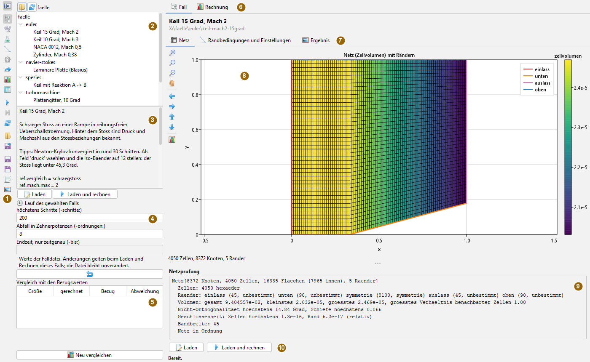
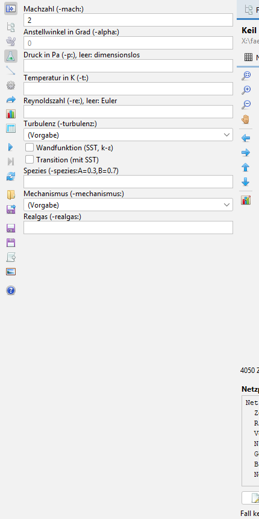
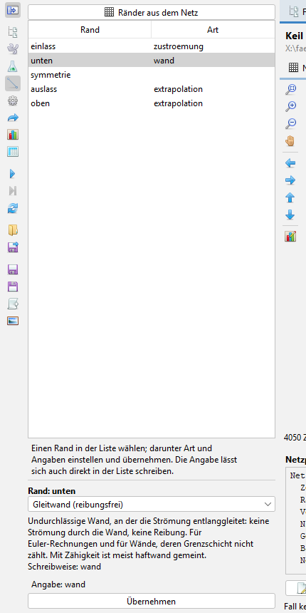
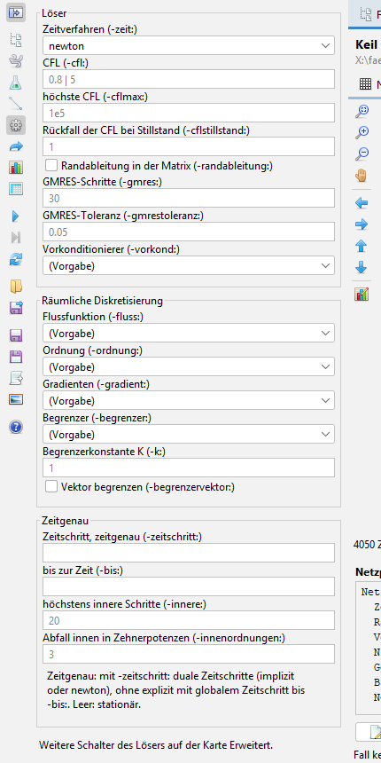
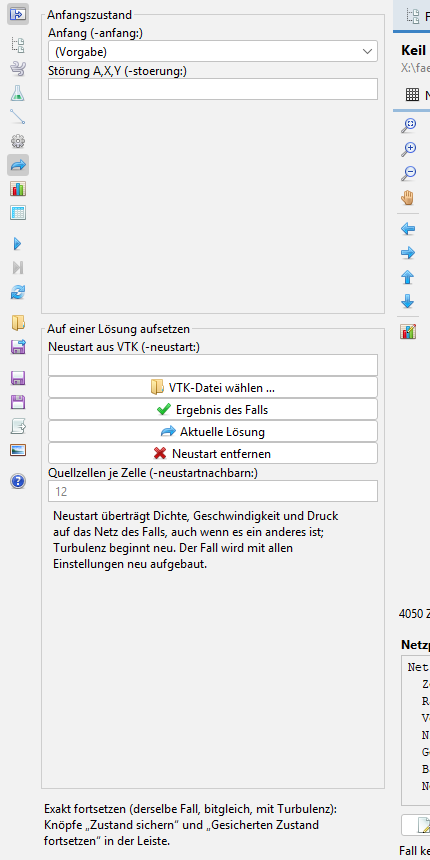
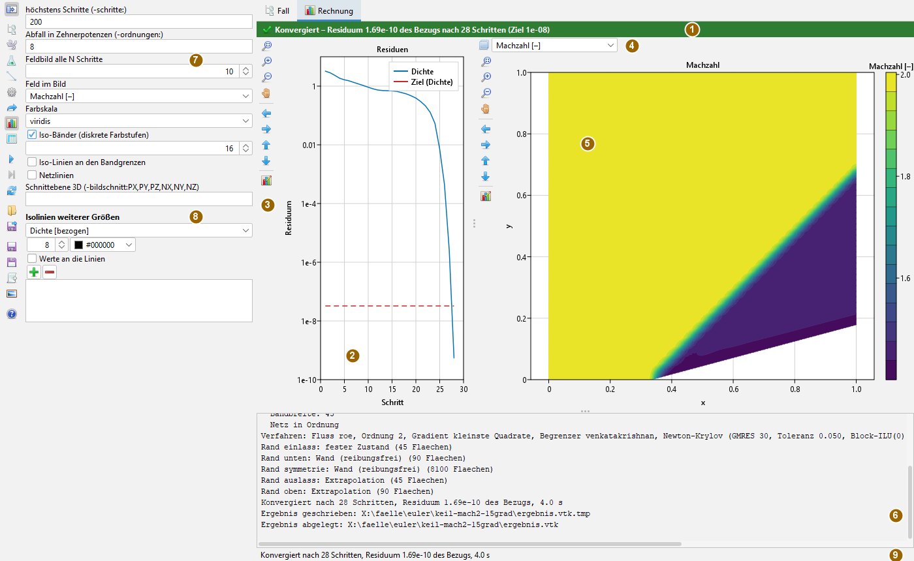

Strömung rechnen – Bedienung
Bedienseite, Stand 04.11.2026. Wie man einen Fall aus der Sammlung wählt, ansieht, einstellt und rechnet, wie man den Verlauf liest und wie man auf einer Lösung aufsetzt. Die Bilder sind Bildschirmfotos der App mit dem mitgelieferten Fall „Keil 15 Grad, Mach 2“.
Das Fenster
Die App öffnet man im Menü Anwendungen mit Strömung rechnen (CFD) oder mit Alt+F. Sie hat keine Aufklappfenster; Einstellungen stehen als Karten links, Rückmeldungen im Panel. Nur zum Öffnen und Speichern von Dateien erscheint die Dateiauswahl.

Die Mitte hat zwei Reiter. Fall zeigt den gewählten Fall, bevor gerechnet wird: das Netz, die Ränder mit ihrer Bedeutung, die Einstellungen und ein abgelegtes Ergebnis. Rechnung zeigt den laufenden oder letzten Lauf: Residuen, Feldbild und Protokoll. Rechnen und „Netz prüfen“ wechseln von selbst auf Rechnung, das Wählen eines Falls auf Fall.
Grundlage ist immer eine Falldatei: eine Liste von Schaltern -name:wert, je Zeile einer. Jede Karte setzt nur einzelne dieser Schalter. Was die App rechnet, rechnet das Werkzeug cmd.cfd.Stroemung mit derselben Datei genauso.
Die Leiste
Die Knöpfe tragen nur Symbole; was sie tun, steht im Tooltip. Die oberen acht wählen eine Karte, die unteren lösen eine Aktion aus. Während einer Rechnung sind alle Aktionen außer Anhalten, Feldbild speichern und Hilfe gesperrt.
| Symbol | Tooltip | Was geschieht |
|---|---|---|
 | Werkzeugleiste ein- oder ausblenden | Karte aus- und wieder einblenden; die Mitte bekommt die ganze Breite. |
| Fallsammlung | Arbeitsverzeichnis, Baum der Fälle, Laufwerte, Vergleich. | |
| Fall und Netz | Netz erzeugen oder lesen, prüfen; die Falldatei als Text. | |
| Physik | Anströmung, Zähigkeit, Turbulenz, Gas. | |
| Randbedingungen | Art und Angaben je Rand. | |
| Verfahren | Löser, räumliche Diskretisierung, zeitgenaues Rechnen. | |
| Anfang und Neustart | Anfangszustand, Aufsetzen auf einer Lösung. | |
| Lauf und Anzeige | Schritte, Abbruchziel, Feldbild, Isolinien. | |
| Erweitert (alle Schalter) | Jeder Schalter des Lösers mit Erklärung und Prüfung. | |
| Rechnen (oder weiterrechnen) | Rechnet den Fall; ist er unverändert, rechnet derselbe Löser weiter. | |
| Anhalten | Hält vor dem nächsten Schritt an; Weiterrechnen ist möglich. | |
| Neu aufbauen (Rechnung verwerfen) | Verwirft den Löser; der nächste Lauf beginnt von vorn. | |
| Falldatei öffnen | Eine Falldatei außerhalb der Sammlung laden. | |
| Falldatei speichern | Den Fall mit allen Änderungen als Textdatei schreiben. | |
 | Zustand sichern (für Fortsetzen) | Den ganzen Zustand des Lösers schreiben. |
| Gesicherten Zustand fortsetzen | Bitgleich weiterrechnen, als wäre nie unterbrochen worden. | |
| Ergebnis als VTK schreiben | Das Feld für ParaView oder einen späteren Neustart. | |
| Feldbild speichern (PNG oder SVG) | Das Feldbild, wie es zu sehen ist. | |
 | Hilfe: öffnet die Doku zu dieser App (wie F1) | Die Doku-App mit dieser Bedienseite; ohne Doku-App nennt die Statuszeile die Adresse der Website. |
Einen Fall aus der Sammlung wählen
- Karte Fallsammlung öffnen. Oben steht das Arbeitsverzeichnis; der Ordnerknopf wählt ein anderes, der Knopf daneben durchsucht es neu. Vorgabe ist die mitgelieferte Sammlung mit den eigenen Beispielfällen und den umgebauten Fällen aus m-ACHIEVE.
- Im Baum einen Fall anklicken. Darunter erscheinen Titel, Beschreibung, Tipps (hervorgehoben), weitere Angaben und die Falldatei. In der Mitte öffnet sich der Reiter Fall mit dem Netz.
- Unter Lauf des gewählten Falls lassen sich die höchste Zahl der Schritte, der Abfall des Residuums in Zehnerpotenzen und bei zeitgenauen Fällen die Endzeit ändern. Das gilt nur für diesen Fall und nur in der App; die Falldatei bleibt unverändert. Der Rückpfeil stellt die Werte der Datei wieder her.
- Laden übernimmt den Fall in die Karten, Laden und rechnen rechnet ihn sofort; ein Doppelklick im Baum lädt.
Ein Fall ist ein Ordner mit einer Falldatei fall.txt oder mit einem Fall von m-ACHIEVE (achieve.inp). Neben der Falldatei kann testfall.properties liegen: Titel, Beschreibung, Tipps und die Bezugswerte für den Vergleich. Relative Pfade in der Falldatei gelten vom Fallordner aus.
Nach jeder Rechnung eines geladenen Falls füllt sich die Tabelle Vergleich mit den Bezugswerten: gerechnet, Bezug, Abweichung – beim schrägen Stoß etwa Druckverhältnis und Machzahl hinter dem Stoß gegen die Stoßbeziehungen. „Neu vergleichen“ wiederholt das von Hand. Im Baum trägt jeder Fall danach ein Zeichen für seinen letzten Lauf (konvergiert, nicht konvergiert, angehalten).
Den Fall vor dem Rechnen ansehen
Der Reiter Fall baut das Netz des gewählten Falls im Hintergrund auf, bei einer Schätzung bis 200 000 Zellen von selbst, darüber erst auf den Knopf „Netz aufbauen“.
- Netz zeigt das Netz auf dem Schnitt, eingefärbt nach dem Zellvolumen, mit Netzlinien. Jeder Rand, der den Schnitt trifft, ist eine farbige Linie mit Legende. Darunter steht die Netzprüfung: Zellen, Ränder, Volumen, Nicht-Orthogonalität, Schiefe, Geschlossenheit, Bandbreite.
- Randbedingungen und Einstellungen listet die Ränder mit ihrer Art und ihrer Bedeutung – auch, was ein Rand ohne Angabe wird (Wand ohne Zähigkeit als Gleitwand, mit Zähigkeit haftend) und wo eine Angabe fehlt. Daneben stehen die Einstellungen nach Gruppen: Netz, Physik, Verfahren, Lauf, Weitere.
- Ergebnis zeigt ein abgelegtes Ergebnis des Falls (siehe Ablage) mit wählbarer Größe. Ist der Fall seitdem geändert worden, sagt das der Kopf in Orange. Darauf aufsetzen lädt den Fall und setzt den Neustart auf dieses Ergebnis.
Die Karten
Fall und Netz
Wahl der Netzform eines eingebauten Generators (Keil, Kanal, Quader, Zylinder, Profil, Platte, Schaufelpassage und andere) mit Zellzahl und Abmessungen, oder eine Netzdatei (Gmsh, PLOT3D, CGNS, ein Fallordner von m-ACHIEVE). „Netz prüfen“ baut das Netz, zeigt es im Feldbild und füllt die Liste der Ränder. Darunter steht die ganze Falldatei als Text: frei bearbeitbar, „Text übernehmen“ setzt sie als Fall.
Physik

Machzahl und Anstellwinkel der Anströmung. Ohne Druck und Temperatur rechnet der Löser dimensionslos, mit ihnen in SI-Einheiten. Ohne Reynoldszahl sind es die Euler-Gleichungen; mit ihr die Navier-Stokes-Gleichungen, laminar oder mit einem Turbulenzmodell (Spalart-Allmaras, SST, k-ε, Wilcox), wahlweise mit Wandfunktion und Transition.
Spezies mit Anfangsanteilen, ein Verbrennungsmechanismus und eine Zustandsgleichung für reales Gas ergänzen das ideale Gas. Was sie rechnen, erklären die Seiten Spezies und reales Gas.
Der Tooltip jedes Felds erklärt den Schalter und nennt seine Vorgabe.
Randbedingungen

unten im Randeditor.Die Tabelle nennt jeden Rand des Netzes und seine Art. „Ränder aus dem Netz“ liest die Namen aus dem Netz, ohne dass erst gerechnet werden muss.
Unter der Tabelle steht der Randeditor: Rand in der Liste wählen, Art aus dem Katalog wählen. Darunter erscheint die Erklärung der Art mit ihren Bedingungen (etwa „nur mit Zähigkeit“) und der Schreibweise, dann ein Feld je Angabe mit Einheit und Vorgabe. Die entstehende Angabe steht darunter; passt sie nicht, ist sie rot mit Grund und „Übernehmen“ gesperrt.
Eine Angabe lässt sich auch direkt in die Tabelle schreiben; der Editor folgt. Was der Katalog nicht kennt, bleibt als eigene Angabe unverändert stehen. Die Arten selbst beschreibt die Seite Ränder.
Verfahren

Löser: das Zeitverfahren (explizit, implizit, Newton-Krylov) und die CFL-Zahl. Darunter steht nur, was zum gewählten Löser gehört: explizit die Grafikeinheit; implizit und Newton die höchste CFL, der Rückfall bei Stillstand und die Randableitung; Newton zusätzlich Zahl der GMRES-Schritte, Toleranz und Vorkonditionierer.
Räumliche Diskretisierung: Flussfunktion, Ordnung, Gradienten, Begrenzer und seine Konstante.
Zeitgenau: mit Zeitschritt duale Zeitschritte, ohne ihn explizit mit globalem Zeitschritt bis zur Endzeit. Leer heißt stationär.
Die Verfahren erklären die Seiten Fluss, Rekonstruktion und Zeit.
Anfang und Neustart

Der Anfangszustand ist die Zuströmung oder Ruhe, wahlweise mit einer Störung.
Ein Neustart beginnt die Rechnung auf einer früheren Lösung, auch auf einem anderen Netz: Dichte, Geschwindigkeit und Druck werden übertragen, die Turbulenz beginnt neu. Die Lösung kommt aus einer VTK-Datei, aus dem abgelegten Ergebnis des Falls oder aus der aktuellen Rechnung („Aktuelle Lösung“). Typisch ist ein Anlauf in erster Ordnung, dann zweite Ordnung auf dieser Lösung.
Exakt weiter geht es nur über „Zustand sichern“ und „Gesicherten Zustand fortsetzen“ in der Leiste: derselbe Fall, bitgleich, mit Turbulenz.
Lauf und Anzeige
Höchste Zahl der Schritte und das Abbruchziel in Zehnerpotenzen; wie oft das Feldbild erneuert wird; die gezeigte Größe, Farbskala, Iso-Bänder (Vorgabe 16 Stufen) oder Zellfarben, Iso-Linien an den Bandgrenzen, Netzlinien; bei 3D-Netzen die Schnittebene. Unter Isolinien weiterer Größen lassen sich Linien anderer Größen über das Farbfeld legen, je mit Stufen, Farbe und wahlweise Werten an den Linien.
Erweitert
Die Tafel aller gesetzten Schalter des Falls. Darunter lässt sich jeder Schalter des Lösers wählen, mit Gruppe, Erklärung, Vorgabe und erlaubten Werten; der Wert wird beim Tippen geprüft. Schalter, die nur die Kommandozeile auswertet (etwa Bildfolgen oder Kraftverläufe), sind als solche gekennzeichnet, statt eine Wirkung vorzutäuschen.
Rechnen und den Verlauf lesen

Rechnen in der Leiste startet den Lauf in einem eigenen Faden; die Oberfläche bleibt bedienbar. Der Residuenverlauf wächst mit jedem Schritt, das Feldbild wird im eingestellten Takt erneuert. Die gestrichelte rote Linie ist das Ziel: das Bezugsresiduum mal zehn hoch minus die Zahl der Zehnerpotenzen.
Der Kopf über den Diagrammen sagt, wie der Lauf endete:
| Farbe | Ausgang |
|---|---|
| grün | konvergiert, mit Residuum, Schrittzahl und Ziel; zeitgenau: Endzeit erreicht |
| rot | nicht konvergiert (Schrittgrenze erreicht), abgebrochen (kein physikalischer Zustand, mit Grund) oder Fehler |
| orange | angehalten |
Nach einem gescheiterten Lauf ist auch das Symbol des Reiters Rechnung rot, das Protokoll trägt einen Hinweis, und ein Vergleich mit den Bezugswerten wird als nur bedingt gültig markiert.
Ist der Fall seit dem letzten Lauf unverändert, rechnet „Rechnen“ mit demselben Löser weiter, und der Bezug der Residuen bleibt. Eine Änderung an einer Karte baut den Fall beim nächsten Rechnen neu auf.
Die Leiste neben jedem Diagramm setzt die Ansicht zurück, vergrößert, verkleinert, schaltet den Verschiebemodus und verschiebt in vier Richtungen. Ihr letzter Knopf öffnet rechts die Karte Achsen und Titel: Titel, Legende, Bereiche, logarithmische Achsen.
Das Feldbild von der Grafikeinheit
Rechnet der Fall auf der Grafikeinheit, kommt das Feldbild während des Laufs fertig von dort: der Zustand bleibt auf der Karte, zur CPU geht nur das Bild. Das gilt für Dichte, Geschwindigkeiten, Druck, Mach, Temperatur, Betrag und Residuum. Die Werte selbst werden geholt, wenn die Ansicht sie braucht: bei Iso-Linien auf Bändern, Isolinien weiterer Größen, logarithmischen oder umgekehrten Achsen und in der Netzansicht. Das letzte Bild eines Laufs entsteht immer aus den Werten. Geht die Karte während des Laufs verloren, kommen die Bilder wieder von der CPU.
Früher Abbruch: -abbruchfaktor:F (Karte Erweitert oder Falldatei, F größer 1) beendet den Lauf, sobald das bezogene Residuum über F steigt oder keine Zahl mehr ist. Der Kopf zeigt das als Abbruch mit Grund.
Implizit und Chemie auf der Grafikeinheit
Karte Verfahren: LU-SGS auf der Grafikeinheit (Schalter lusgsgrafik) rechnet den impliziten Schritt nach Farben auf der Karte. Der Schalter chemiegrafik (Gruppe Gas, Spezies und Chemie der Schalterliste) rechnet die steife Chemie je Zelle dort. Sie ist nicht bitgleich zur CPU, lohnt ab rund tausend Zellen, und der erste Übersetzungslauf dauert ein bis drei Minuten. Beide sind von sich aus aus; mehr bei der Grafikeinheit.
Ergebnisse ablegen und weitergeben
- Ablage: konvergiert ein Fall der Sammlung oder erreicht er die Endzeit, legt die App
ergebnis.vtkundergebnis.properties(Ausgang, Schritte, Residuum, Datum, Prüfsumme der Schalter) in den Fallordner. Der Unterreiter Ergebnis zeigt es beim nächsten Wählen. - VTK schreiben legt das Ergebnis an einen frei gewählten Ort, Feldbild speichern das Bild als PNG oder SVG.
- Falldatei speichern schreibt den Fall mit allen Änderungen. Mit dieser Datei rechnet
cmd.cfd.Stroemung -op:rechne -fall:DATEIdasselbe ohne Oberfläche nach. - Zustand sichern und fortsetzen sind für lange Rechnungen: Unterbrechen, später bitgleich weiterrechnen.
Grenzen
- Bei 3D-Netzen zeigt die App einen ebenen Schnitt, keine räumliche Ansicht.
- Die Konvergenz ist relativ zum größten Residuum der ersten zehn Schritte. Ein Neustart auf einer bereits konvergierten Lösung hat einen sehr kleinen Bezug und erreicht weitere Zehnerpotenzen meist nicht; der Lauf endet dann „nicht konvergiert“, obwohl er auf der Lösung steht.
- Die Zeilen des Protokolls, die der Löser schreibt (Netzprüfung, Verfahren, Ränder), sind wie auf der Kommandozeile deutsch.